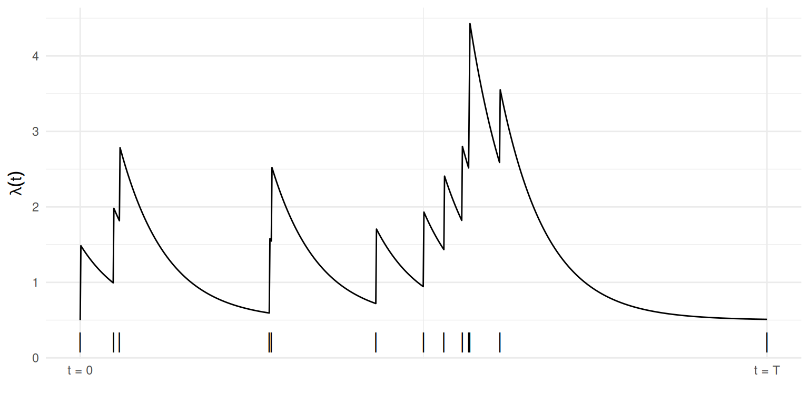
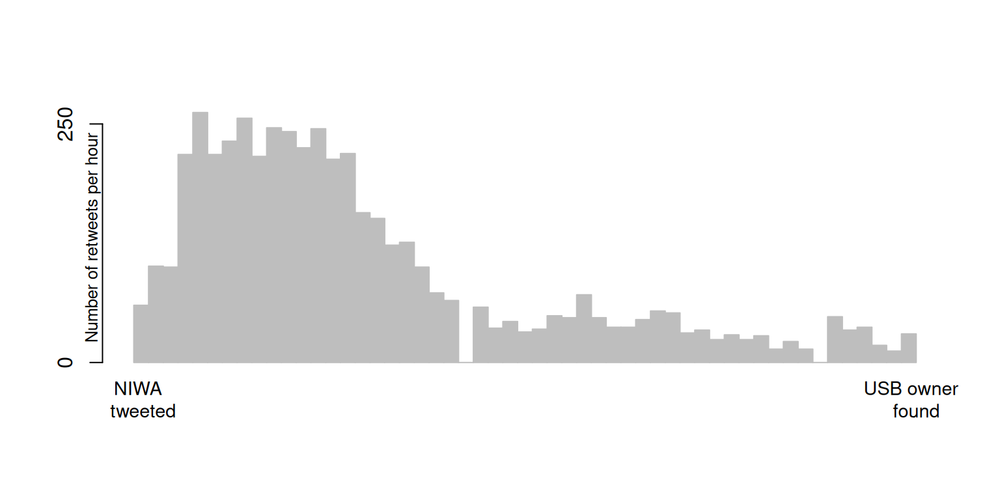
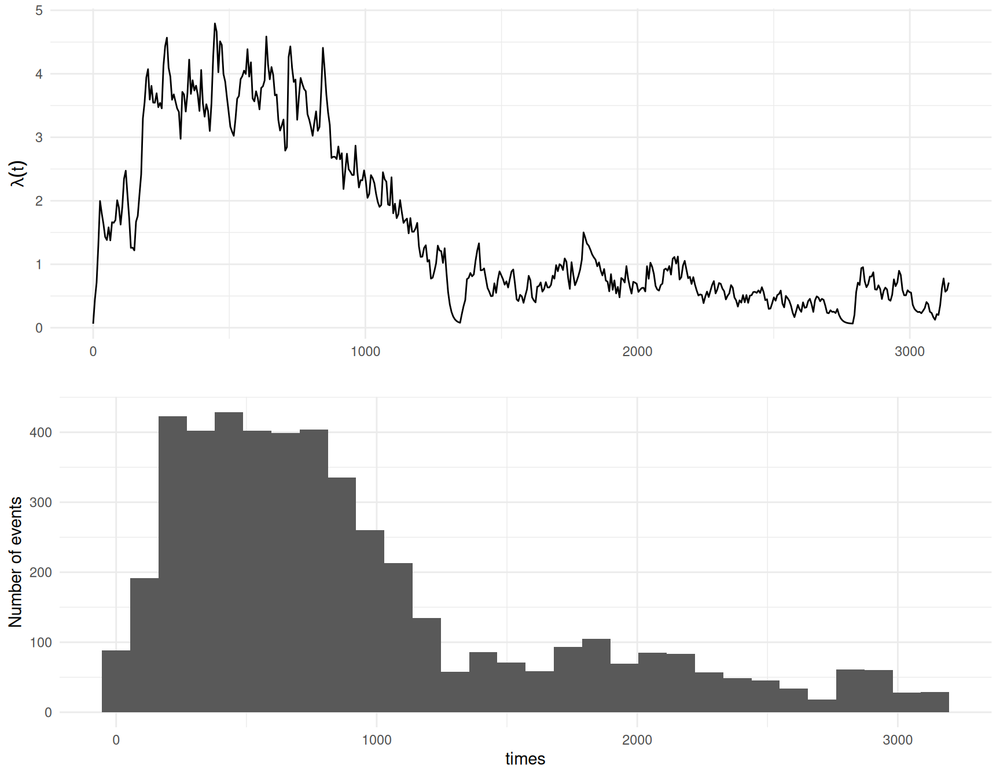
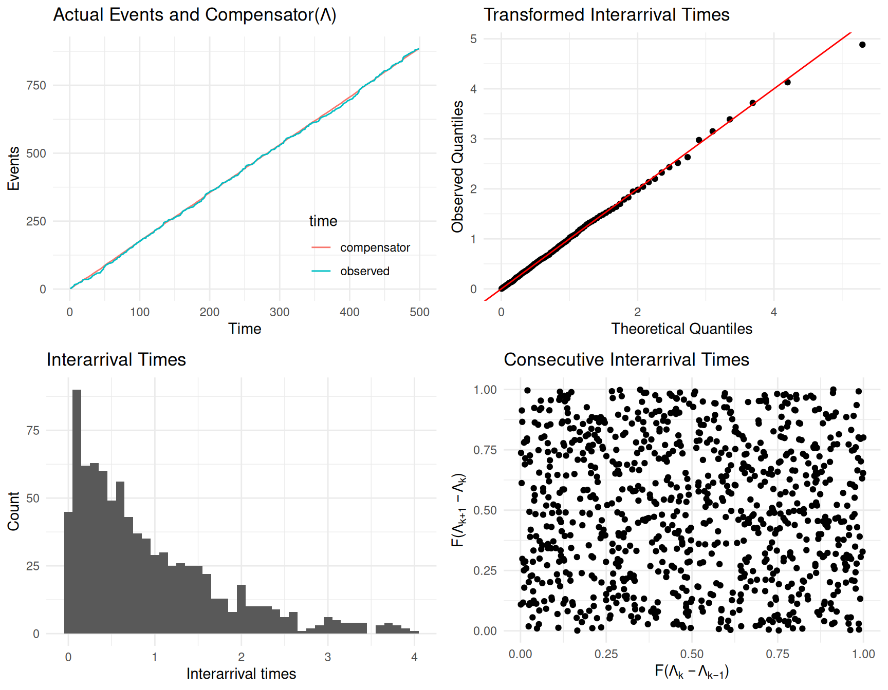
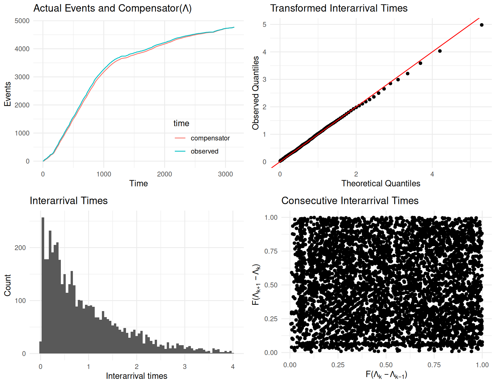
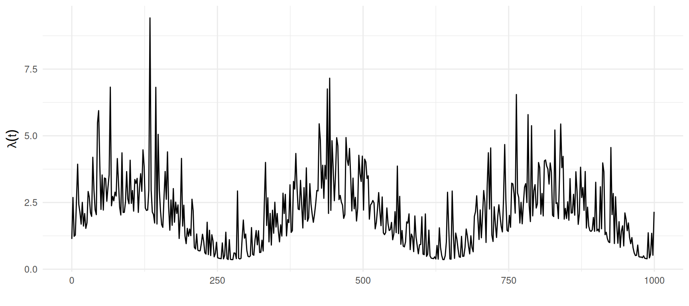
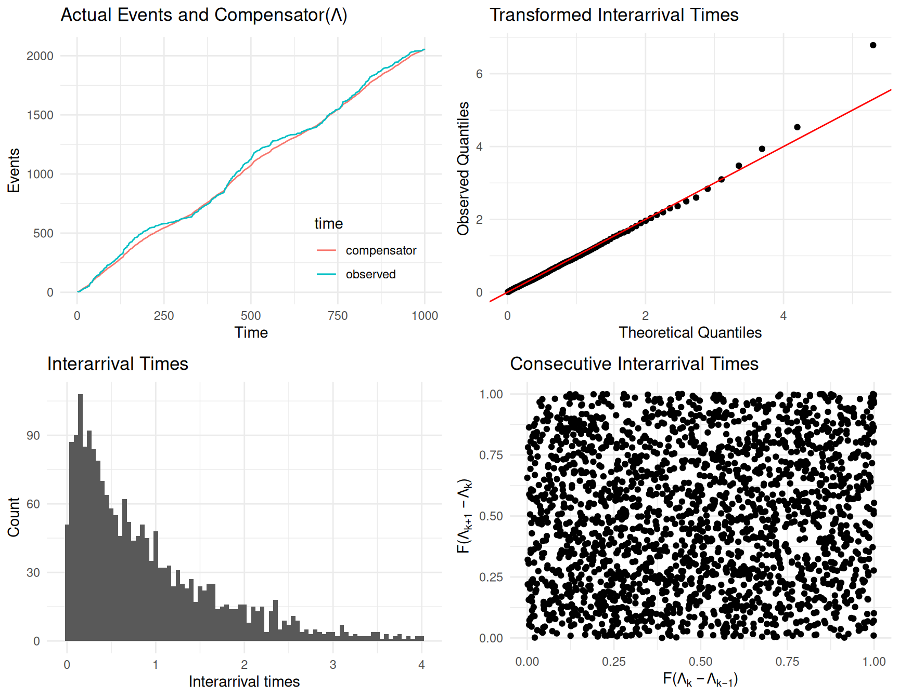

2 Univariate Hawkes process
2.1 The model and your data
A univariate Hawkes process (Hawkes (1971)) is a model for event times where the occurrence of an event temporarily increases the chance of further events. It is described by its conditional intensity, the expected rate of events at time \(t\) given everything that has happened before \(t\),
\[\lambda(t) = \mu + \alpha \sum_{i:\tau_i<t}\text{exp}(-\beta (t-\tau_i)), \tag{2.1}\]
where \(\tau_1, \tau_2, ...\) are the event times. There are three parameters:
- \(\mu\), the background rate: the rate at which “spontaneous” events occur, i.e., events not triggered by any earlier event;
- \(\alpha\), the jump in the intensity immediately after each event; and
- \(\beta\), the decay rate: how quickly the extra intensity caused by an event dies away. \(1/\beta\) is roughly how long (in the units of your times) an event continues to have an influence.
Two derived quantities are usually of most interest:
- the branching ratio \(\alpha/\beta\), the expected number of events directly triggered by any one event. This must be less than 1 (otherwise the process explodes), and
stelfienforces \(\alpha \leq \beta\); and - the expected number of background events over the observation period \([0, T]\), which is \(\mu T\). The proportion of events that are background events is roughly \(1 - \alpha/\beta\).
Plotted below is the conditional intensity of a Hawkes process with \(\mu = 0.5\), \(\alpha = 1\), and \(\beta = 1.5\). The events are shown by the vertical dashes along the x-axis. The intensity jumps by \(\alpha\) each time an event occurs and decays exponentially back towards \(\mu\) if no event occurs.
2.1.1 What your data need to look like
fit_hawkes() requires a single numeric vector of event times. Some things to be aware of:
- Times must be numeric, sorted, and start near zero. Dates or date-times (e.g.,
POSIXct) need to be converted to a number, for example withas.numeric(difftime(x, min(x), units = "days")). The units you choose (seconds, minutes, days, …) set the units of the parameters: \(\mu\) is then events per day (say) and \(1/\beta\) is in days. Choose units that make the numbers neither tiny nor huge. - No two events can have exactly the same time.
stelfiwill stop with an error if they do. Ties are very common when times are recorded to the nearest day or minute. You can either drop duplicates (e.g.,unique(times)), which throws away information, or add a small random amount to each time (“jittering”) that is less than the recording resolution, e.g., a random number of seconds within the recorded minute (see Section 3.3). If a large proportion of your events are tied the recording resolution is too coarse relative to the speed of the self-excitement and a Hawkes model may not be appropriate. - The observation period is assumed to be from \(t = 0\) to the last event. If you watched for events for longer than this, the background rate will be slightly overestimated. Starting the times at the first event (rather than the true start of observation) has a similar small effect.
- The background rate is assumed to be constant. If events are more common at certain times of day or year for reasons unrelated to self-excitement, this will be mistaken for self-excitement. See Section 2.5 for a model with a time-varying background.
- Self-excitement is assumed to decay exponentially. For some processes (e.g., earthquake aftershocks) the influence of an event decays much more slowly than this, which the goodness-of-fit checks in Section 2.4 will usually reveal.
- All events are assumed to be of the same type and of the same importance. See Chapter 3 if events differ in how much they trigger, and Chapter 4 if there are different types of event.
As a rough guide you need at least a hundred or so events to estimate the three parameters with any precision.
2.2 A simulated example
Data were simulated from a Hawkes process with \(\mu = 1.3\), \(\alpha = 0.4\), and \(\beta = 1.5\) over \(t \in [0, 500]\) (so the true branching ratio is \(\alpha/\beta =\) 0.267). The data are simply a sorted numeric vector of 885 event times:
head(times)[1] 0.9586637 1.1416407 1.2148232 2.6856813 2.7312091 3.46657142.2.1 Fitting the model using stelfi
To fit a univariate Hawkes model in stelfi use fit_hawkes() with
times, the vector of event times, andparameters, a named vector of starting values for \(\mu\) (mu), \(\alpha\) (alpha), and \(\beta\) (beta).
The estimates (and standard errors) are returned by get_coefs().
sv <- c(mu = 1, alpha = 0.5, beta = 2)
fit <- fit_hawkes(times = times, parameters = sv)
stelfi <- get_coefs(fit)
stelfi Estimate Std. Error
mu 1.3999339 0.1125087
alpha 0.3734267 0.1207302
beta 1.7719772 0.74884042.2.2 Comparison with emhawkes and hawkesbow
The same model can be fitted using the emhawkes (Lee (2023)) and hawkesbow (Cheysson (2021)) packages. Note that emhawkes requires the times between events rather than the event times (and here final_hessian = "stable" is used, as the default numerical Hessian can fail to give standard errors).
## emhawkes
library(emhawkes)
h <- new("hspec", mu = sv[1], alpha = sv[2], beta = sv[3])
inter <- c(0, diff(times))
fit_em <- hfit(object = h, inter_arrival = inter, final_hessian = "stable")
em <- summary(fit_em)$estimate
em Estimate Std. error t value Pr(> t)
mu1 1.4003963 0.1131465 12.376845 3.487871e-35
alpha1 0.3700542 0.1195182 3.096216 1.960078e-03
beta1 1.7539005 0.7394766 2.371813 1.770103e-02## hawkesbow
library(hawkesbow)
fit_bow <- mle(events = times, kern = "Exponential", end = max(times))Warning in nloptr.add.default.options(opts.user = opts, x0 = x0,
num_constraints_ineq = num_constraints_ineq, : No termination criterion
specified, using default(relative x-tolerance = 1e-04)## standard errors from the Hessian
bow <- cbind(Estimate = fit_bow$par,
"Std. error" = -fit_bow$model$ddloglik(times, max(times)) |>
solve() |> diag() |> sqrt())
bow Estimate Std. error
[1,] 1.3998368 0.11238176
[2,] 0.2107781 0.05814911
[3,] 1.7724499 0.74877227The table below gives the estimates (standard errors in brackets) from each package alongside the true values. Note that hawkesbow estimates the branching ratio \(\alpha/\beta\) directly, rather than \(\alpha\).
| \(\mu\) | \(\alpha\) | \(\beta\) | \(\alpha/\beta\) | |
|---|---|---|---|---|
| Truth | 1.300 | 0.400 | 1.500 | 0.267 |
| stelfi | 1.4 (0.113) | 0.373 (0.121) | 1.772 (0.749) | - |
| emhawkes | 1.4 (0.113) | 0.37 (0.12) | 1.754 (0.739) | - |
| hawkesbow | 1.4 (0.112) | - | 1.772 (0.749) | 0.211 (0.058) |
All three packages give essentially the same answer, and each recovers the true values to within a couple of standard errors. Small differences arise because each package treats the end of the observation period slightly differently.
2.3 An applied example: retweets of a viral tweet
A NIWA scientist found a working USB stick in the scat of a leopard seal and tweeted about it in the hope of finding its owner. The times of the retweets are available in stelfi as retweets_niwa (see ?sec-data). Retweets are a natural candidate for a Hawkes process: each retweet exposes the tweet to more people, who may then retweet it themselves.
data(retweets_niwa, package = "stelfi")
head(retweets_niwa)[1] "2019-02-07 06:50:08 UTC" "2019-02-07 06:50:08 UTC"
[3] "2019-02-07 06:49:22 UTC" "2019-02-07 06:48:48 UTC"
[5] "2019-02-07 06:47:52 UTC" "2019-02-07 06:47:42 UTC"The data are date-times (POSIXct). They are converted to minutes since the first retweet. Retweets are recorded to the nearest second, and a number of retweets share the same second; here duplicate times are simply dropped using unique() (see Section 2.1.1 for an alternative).
times <- unique(sort(as.numeric(difftime(retweets_niwa, min(retweets_niwa), units = "mins"))))
length(retweets_niwa) - length(times) ## number of dropped duplicates[1] 118The histogram below shows the number of retweets per hour from the original tweet to the time (just over two days later) that the owner of the USB stick came forward.

To fit the model choose some starting values and supply these, along with the numeric times, to fit_hawkes().
sv <- c(mu = 9, alpha = 3, beta = 10)
fit <- fit_hawkes(times = times, parameters = sv)
pars <- get_coefs(fit)
pars Estimate Std. Error
mu 0.06328099 0.017783908
alpha 0.07596531 0.007777899
beta 0.07911346 0.008109789From the estimates above (time is in minutes):
- the expected number of background retweets is \(\hat{\mu}T =\) 0.063 \(\times\) 3143 \(=\) 198.9, so only around 199 of the 4772 retweets were “spontaneous” and the remainder were triggered by earlier retweets;
- the branching ratio is \(\hat{\alpha}/\hat{\beta}\) = 0.96, i.e., each retweet directly triggers 0.96 further retweets on average; and
- \(1/\hat{\beta}\) = 12.64 minutes, so the influence of a retweet largely dies away after around 13 minutes.
The show_hawkes() function plots the estimated conditional intensity (top) and the data (bottom).
show_hawkes(fit, type = "both")
2.4 Goodness-of-fit
2.4.1 The idea
The compensator \(\Lambda(t) = \int_0^{t} \lambda(s) ds\) is the expected number of events up to time \(t\) under the fitted model. The random time change theorem (Daley, Vere-Jones, et al. (2003)) says that if the model is correct, then the transformed times \(\Lambda(\tau_1), \Lambda(\tau_2), ...\) behave like a homogeneous Poisson process with rate 1. Equivalently, the compensator differences \(\Lambda(\tau_i) - \Lambda(\tau_{i-1})\) should be independent draws from an \(\text{Exp}(1)\) distribution. This gives two standard checks:
- a Kolmogorov-Smirnov (KS) test of whether the compensator differences follow an \(\text{Exp}(1)\) distribution; and
- a Ljung-Box test of whether consecutive compensator differences are correlated (they should not be).
Small p-values indicate that the model does not describe the data well. With large datasets these tests will detect even small departures from the model, so the accompanying plots are often more useful than the p-values.
2.4.2 What a good fit looks like
The compensator differences can be extracted using compensator_differences() and tested directly. For the model fitted to the simulated data in Section 2.2 (where the model is correct):
compensator <- compensator_differences(fit_sim)
stats::ks.test(compensator, "pexp")
Asymptotic one-sample Kolmogorov-Smirnov test
data: compensator
D = 0.013855, p-value = 0.9958
alternative hypothesis: two-sidedstats::Box.test(compensator, type = "Ljung")
Box-Ljung test
data: compensator
X-squared = 0.66583, df = 1, p-value = 0.4145There is no evidence against the compensator differences being independent \(\text{Exp}(1)\) draws. The function show_hawkes_GOF() carries out both tests and draws four diagnostic plots:
- top left, the compensator (expected number of events) and the observed cumulative number of events against time, these should lie close to one another;
- top right, a QQ plot of the compensator differences against the \(\text{Exp}(1)\) distribution, the points should lie on the line;
- bottom left, a histogram of the compensator differences, which should look like an \(\text{Exp}(1)\) distribution; and
- bottom right, consecutive compensator differences (on the probability scale) plotted against each other, which should show no pattern.
show_hawkes_GOF(fit_sim)
Asymptotic one-sample Kolmogorov-Smirnov test
data: interarrivals
D = 0.013855, p-value = 0.9958
alternative hypothesis: two-sided
Box-Ljung test
data: interarrivals
X-squared = 0.66583, df = 1, p-value = 0.4145
2.4.3 The retweet model
show_hawkes_GOF(fit)
Asymptotic one-sample Kolmogorov-Smirnov test
data: interarrivals
D = 0.031122, p-value = 0.0001937
alternative hypothesis: two-sided
Box-Ljung test
data: interarrivals
X-squared = 3.3923, df = 1, p-value = 0.0655
The compensator follows the observed number of retweets closely (top left), so the model captures the overall rise and fall in retweeting, and the Ljung-Box test gives little evidence of correlation between consecutive compensator differences. The KS test, however, gives a small p-value. With nearly 5000 events the test is very sensitive, and the QQ plot shows the model is broadly adequate: the main departure is that there are fewer very short gaps between retweets than the model expects. This is at least partly an artefact of the data, since times are recorded to the nearest second and tied retweets were dropped (Section 2.1.1), so very short gaps cannot appear in the data. Note too that the estimated branching ratio is close to 1, which is typical of “viral” behaviour but means the background and self-excitement are hard to separate. Possible next steps are jittering the tied times rather than dropping them, a time-varying background (Section 2.5), or including information on the retweeter, such as their number of followers, as a mark (Chapter 3).
2.5 Extension: a time-varying background rate
In some applications the background rate itself changes over time, for example with the time of day or the season. Ignoring this can make it look as though there is self-excitement when really events are just more common at certain times. A Hawkes process with a time-varying background replaces \(\mu\) in Equation 2.1 with a function \(\mu(t)\). This model is fitted in stelfi using fit_hawkes_cbf() (custom background function).
Data were simulated (using hawkesbow, Cheysson (2021)) over 1000 days from a Hawkes process with a yearly cycle in the background, \(\mu(t) = A + B\,\text{sin}(\frac{2 \pi t}{365.25})\), with \(A = 1\) and \(B = 0.5\), and self-excitement parameters \(\alpha = 1\) and \(\beta = 2\). As before the data are a sorted vector of 2056 event times.
To fit this model you need to supply both \(\mu(t)\) (background) and its integral \(\int_0^t \mu(s) ds\) (background_integral) as functions of a vector of parameters and time. To ensure \(\mu(t) > 0\) the parameters are transformed: \(A = e^{x}\) and \(B = \text{logit}^{-1}(y) A\), so that \(0 < B < A\).
background <- function(params, t) {
A <- exp(params[[1]])
B <- stats::plogis(params[[2]]) * A
A + B * sin((2 * pi * t) / 365.25)
}
background_integral <- function(params, x) {
A <- exp(params[[1]])
B <- stats::plogis(params[[2]]) * A
(A * x) - B * cos((2 * pi * x) / 365.25)
}These are passed to fit_hawkes_cbf() along with the times, starting values for \(\alpha\) and \(\beta\) (parameters), and starting values for the background parameters (background_parameters).
fit <- fit_hawkes_cbf(times = times, parameters = list(alpha = 0.5, beta = 1.5),
background = background, background_integral = background_integral,
background_parameters = list(1, 1))
get_coefs(fit) Estimate Std. Error
alpha 0.9849267 0.0936573
beta 2.1975927 0.2062791
BP 1 0.1270931 NA
BP 2 0.7677218 NAget_coefs() returns \(\alpha\) and \(\beta\) as usual, the (transformed) background parameters are in fit$background_parameters. These are transformed back to \(A\) and \(B\) below and compared with the truth.
| \(A\) | \(B\) | \(\alpha\) | \(\beta\) | |
|---|---|---|---|---|
| Truth | 1.000 | 0.500 | 1.000 | 2.000 |
| stelfi | 1.136 | 0.776 | 0.985 | 2.198 |
The fitted intensity and goodness-of-fit diagnostics (Section 2.4) are shown using show_hawkes() and show_hawkes_GOF() as before.
show_hawkes(fit)
show_hawkes_GOF(fit)
Asymptotic one-sample Kolmogorov-Smirnov test
data: interarrivals
D = 0.018277, p-value = 0.4985
alternative hypothesis: two-sided
Box-Ljung test
data: interarrivals
X-squared = 28.608, df = 1, p-value = 8.86e-08
The KS test and QQ plot show no evidence of lack of fit. The Ljung-Box test, however, gives a small p-value, indicating some correlation between consecutive compensator differences even though the data were simulated from this model. Notice that the background parameters (in particular \(B\)) are estimated less accurately than the self-excitement parameters: separating a slowly varying background from self-excitement is difficult, and errors in the background show up as correlation in the compensator differences. With real data a result like this suggests revisiting the form of \(\mu(t)\).
Note
When writing your own background function, bear in mind that every extra parameter makes the model harder to fit and that self-excitement and a changing background can be hard to tell apart. Only include a time-varying background if you have a good reason (e.g., a known daily or seasonal cycle), and check that the estimated self-excitement changes when you do.